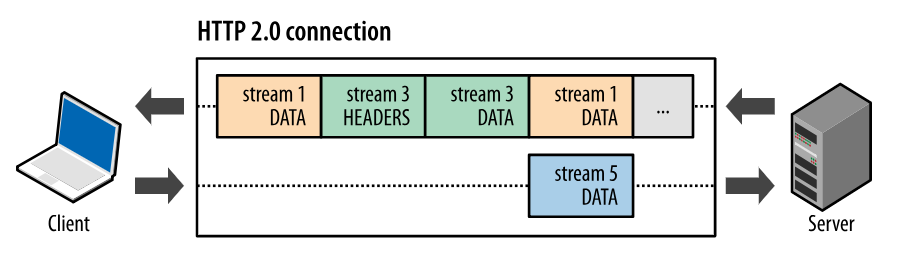
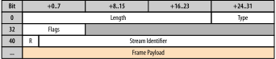

Binary Framing Layer
- Binary framing layer
- defines how HTTP messages are encapsulated and transferred
- communication is split into messages and frames in binary format
HTTP/2 Communication
- Data exchange between the client and server
- break down of the communication into frames
- frames are mapped to messages that belong to a particular stream
- communication is multiplexed within a single TCP connection.
- Stream
- bi-directional flow of bytes in a connection
- may carry one or more messages
- may have a priority
- Message
- a sequence of frames
- it maps to logical request or response message
- Frame
- the smallest unit of communication
- each has a frame header which identifies a stream to which it belongs.
Streams, Messages, and Frames

Request and Response Multiplexing
- Parallel requests
- HTTP/1.x can use HTTP pipelining; they open multiple connections
- browser typically opens up six connections
- One response can be delivered at a time (response queuing) per connection
- Head of line blocking problem
- HTTP/2 allows full request and response multiplexing
- Allows for parallel in-flight streams
- There are 3 parallel streams in the below example: 
- Performance benefits
- Interleave requests/responses in parallel without blocking any one.
- Deliver lower page load times by eliminating unnecessary latency
- Improve utilization of available network capacity
Binary Framing – Frame Header
- 9-byte frame header 
- Fields
length– 24 bits, allows a frame to carry 224 bytes of data.type– 8 bits, determines the format and semantics of the frame.- Frame types:
DATA,HEADERS,PRIORITY,RST_STREAM,SETTINGS,PUSH_PROMISE,PING,GOAWAY,WINDOW_UPDATE,CONTINUATION flags– 8 bits, defines frame-type specific boolean flags.stream identifier– 31 bits, uniquely identifies the HTTP/2 stream.
Stream Lifecycle
- HTTP/2 doesn’t reuse the same stream IDs
- A stream's lifecycle corresponds to request/response messages interaction.
- A new id is assigned until it reaches
231 - When the last id is used, the browser sends
GOAWAYframe to initialize a new TCP connection, and the stream ID is reset.
Initiating a New Stream
- New stream created with request metadata
- HEADERS and DATA frames sent separately
Sending Application Data
- App data sent in DATA frame
- There are more frames that carry the data (i.e.
END_STREAMflag is not set) - The small frame size allows for efficienct multiplexing
- The app data is loaded by application according to the used encoding mechanism (plain text, gzip, etc.).
Request and Response Multiplexing Benefits
- Interleave multiple requests and responses
- Requests or responses are not blocked on any other requests or response
- A single TCP connection
- Multiple requests and responses can be delivered in parallel
- Remove HTTP/1.x workarounds
- Concatenated files
- Image sprites
- Domain sharding
- Deliver lower page load times
- Eliminates unnecessary latency
- Improves utilization of available newtork capacity
Browser Request Prioritization
- Not all resources have equal priority when rendering a page
- HTTP/2 stream prioritization
- Requests are prioritized based on type of asset, location on the page, and learned priority from previous visits
- If page loading was blocked on an asset, the asset priority gets increased
- DOM, CSSOM and JavaScript
- HTML document is critical to construct DOM
- CCS is required to construct CSSOM
- Both DOM and CSSOM construction can be blocked on JavaScript resources
- A script can issue
doc.writeand block DOM parsing and construction - A script can query for a computed style of an object; the script can block on CSS
Stream Prioritization
- Purpose
- Messages split into frames which are delivered in multiplexed streams
- The order in which frames are delivered is important for a good performance
- Client can define stream prioritization
- optimizations in the browser, change prioritization based on user interaction
- Streams' weights and dependency
- Each stream can be assigned an integer weight between 1 and 256.
- Each stream may be given an explicit dependency on another stream.
Stream Prioritization (cont.)
- Dependency
- referencing the unique identifier of another stream as its parent
- if the identifier is omitted the stream is dependent on the "root stream"
- The parent stream should be allocated resources ahead of its dependencies.
- "Please process and deliver response D before response C"
- Weights
- Sibling streams have resources allocated as per their weights
- Example
- Sum all the weights:
4 + 12 = 16 - Divide each stream weight by the total weight:
A = 12/16,B = 4/16 - Stream
Areceives3/4and streamBreceives1/4of available resources;
Dependency priorities
- Grouping streams
- Streams that are never opened with HEADERS frame
- They exist as nodes in the dependency tree that other streams depend on
- Dependency groups in Firefox
- Five fixed dependency groups
- crearted with
PRIORITYframe when a session is established. - Every new stream depends on them
- Example (from a sample http2 packets)
Flow control
- Prevent sender from receiving data it doest not want
- Receiver is busy or under heavy load
- Receiver is willing to allocate fixed amount of resources for a stream
- Examples
- Client request a video stream; a user pauses the stream
- the client wants to pause the stream delivery to avoid buffering
- A proxy server has a fast downstream and slow upstream
- the proxy server can control how quickly the downstream delivers data to match the speed of upstream
- better control of resource usage
- Similar problems as in TCP flow control
- TCP flow control has no app-level API to regulate delivery of streams
- Flow control
- Sender and receiver both advertise stream flow control window in bytes
= the size of the available buffer space to hold the incoming data - exhanged by special
SETTINGSandWINDOW_UPDATEframes - Flow control is hop-by-hop, not end-to-end
- an intermediary can set its own flow control
Flow Control Example
- Window size
- The client and server maintains the window size for each stream and a connection.
- How much data the client can still send to the server and vise-versa.
WINDOW_UPDATEprovides an increment of the current window size.- When the window size is zero, no data is sent until the other party changes it.
Server push
- Ability to send multiple responses for a single request
- A response to the request is sent back
- Additonal resources can be pushed without client requesting them
- Hypertext – "server knows what the client will need"
- Similar to resource inlining
- A resource is pushed to the client in HTML/CSS resource
- Performance benefits
- Cached by the client, reused across pages, multiplexed, declined by the client

Push promise
PUSH_PROMISEframes- A singnal that the server intents to push resources to the client
- The client needs to know which resources the server intends to push to avoid creating duplicate requests for these resources.
- After the client receives
PUSH_PROMISE - it may decline the stream (via
RST_STREAMframe) - For example, when the resource is already in the cache
- As for inline resources, this is not possible, the client always receives them
- it can limit the number of concurrently pushed streams
- it can adjust the initial flow control window to control how much data is pushed when the stream is first opened
- it can disable server push entirely
- pushed resources must obey the same-origin policy
Implementation
- You need to implement Server Push at the app level
- Your server may provide a library/API to do so
- Node express middleware:
http2-express-autopush - Nginx: http2 server push
server {
# Ensure that HTTP/2 is enabled for the server
listen 443 ssl http2;
ssl_certificate ssl/certificate.pem;
ssl_certificate_key ssl/key.pem;
root /var/www/html;
# whenever a client requests demo.html, also push
# /style.css, /image1.jpg and /image2.jpg
location = /demo.html {
http2_push /style.css;
http2_push /image1.jpg;
http2_push /image2.jpg;
}
}
Rules for server push
- Performance analysis by Google
- Server push may not always lead to a better performance, such as:
- Push just enough resources to fill idle network time, and no more.
- (A) may be better than (C) when
HTML size > BDP
BDP = Bandwidth-delay product
Header compression
- Purpose
- Each HTTP request/response contains a set of headers (metadata)
- HTTP/1.x – metadata sent as plain text, adds 500-800 bytes per transfer
- HTTP/2 provides
- Request and response metadata are compressed using HPACK format
- header fields encoded via a static Huffman code – reduces size
- client and server maintain an indexed list of previously seen header fields in static and dynamic tables
Static and Dynamic Tables
- Static table
- Pre-defined table of
61header fiedls and values where each has assigned an index - Defined in HPACK: Header Compression for HTTP/2

- Decompressed size is
10bytes (name+valuelength) - The real size is
1byte. - Dynamic table
- Dynamically created table of header fields that do not exist in the static table.
- It is maintained by the client and the server
- There are entries starting with index
62
nghttp
- Command line tool
nghttpdisplays frames and a summary information about each frame
$ nghttp -vvv -n https://w20.vitvar.com/lecture1.html
[ 0.071] Connected
The negotiated protocol: h2
[ 0.137] send SETTINGS frame
(niv=2)
[SETTINGS_MAX_CONCURRENT_STREAMS(0x03):100]
[SETTINGS_INITIAL_WINDOW_SIZE(0x04):65535]
[ 0.137] send PRIORITY frame
(dep_stream_id=0, weight=201, exclusive=0)
[ 0.137] send PRIORITY frame
(dep_stream_id=0, weight=101, exclusive=0)
[ 0.137] send PRIORITY frame
(dep_stream_id=0, weight=1, exclusive=0)
[ 0.137] send PRIORITY frame
(dep_stream_id=7, weight=1, exclusive=0)
[ 0.137] send PRIORITY frame
(dep_stream_id=3, weight=1, exclusive=0)
[ 0.137] send HEADERS frame
; END_STREAM | END_HEADERS | PRIORITY
(padlen=0, dep_stream_id=11, weight=16, exclusive=0)
; Open new stream
:method: GET
:path: /lecture1.html
:scheme: https
:authority: w20.vitvar.com
accept: */*
accept-encoding: gzip, deflate
user-agent: nghttp2/1.42.0
[ 0.180] recv SETTINGS frame
(niv=1)
[SETTINGS_MAX_CONCURRENT_STREAMS(0x03):100]
[ 0.180] recv WINDOW_UPDATE frame
(window_size_increment=16711681)
[ 0.180] recv SETTINGS frame
; ACK
(niv=0)
[ 0.180] recv (stream_id=13) :status: 200
[ 0.180] recv (stream_id=13) server: GitHub.com
...
Wireshark and HTTP/2 Traffic
- HTTP/2 is encrypted
- You can capture packets in Wireshark/tcpdump but they are encrypted
- The browser (FF, Chrome, Opera) can dump keys in NSS Key Log Format
- You can use the log to decrypt the communication in Wireshark
- Demo at
https://kde.vitvar.com - Configure an env variable
SSLKEYLOGFILEto point to a file on the filesystem - Start firefox browser; check the keylog file was created.
- Start wireshark; configure the keylog file in pre-master secret log filename
- Start packet capture on
eth0using the filter:((dst host 185.199 and src host 192.168) or
(dst host 192.168 and src host 185.199)) - This captures the packets in both directions between the client and the server and back
- Point firefox to https://vitvar.com
- Check captured packets in the wireshark
- There should be decrypted HTTP/2 communication.